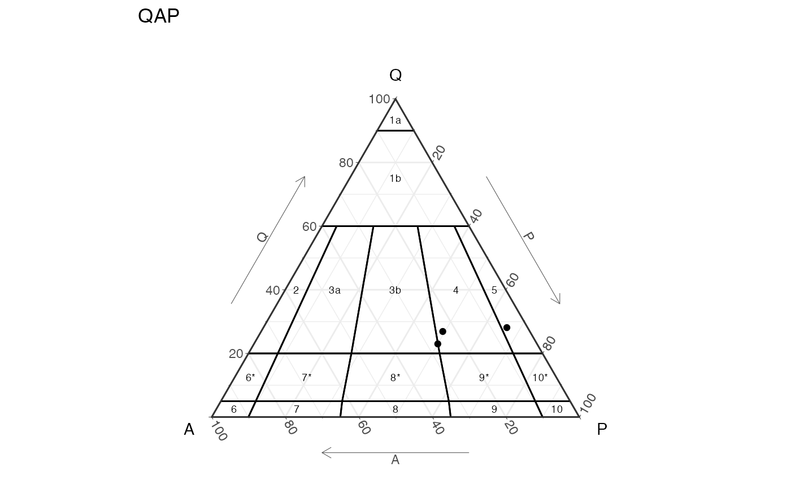

ternary_qap() draws either a static or interactive ternary diagram, in english or spanish. It is a base diagram where data can be plotted.
ternary_qap( output = c("ggplot", "plotly"), language = c("en", "es"), type = c("plutonic", "volcanic") )
| output | The output format: "ggplot" or "plotly" (default is "ggplot") |
|---|---|
| language | The language to be displayed: "en" for english or "es" for spanish (deafult is "en") |
| type | The type of volcanic rock: "plutonic" or "volcanic" (default is "plutonic") |
QAP ternary diagram for plutonic and volcanic rocks in the desired format (object)
For plotting data on the ggplot object it would be easier if the names of the dataframe are "a", "q", and "p", that way it gets mapped automatically, if not make sure to use "aes(x=a,y=q,z=p)".
For plotting on the plotly object the mapping of the new data should be as shown in the example: a = ~q, b = ~a, c = ~p, where a refers to the top ("q"), b refers to the bottom left ("a"), and c refers to the bottom right ("p").
The examples show basic usage and how to add data, which can be more customizable.
library(ggplot2) library(plotly) d = data.frame(q=c(23,26.9,25.3), a=c(27,23.7,5.1), p=c(50,49.4,59.6)) # adding data to ggplot object ternary_qap() + geom_point(data = d)